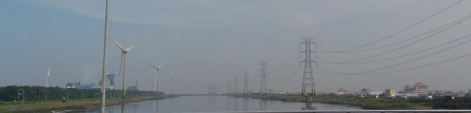

|
|
Community Development
Introduction: What is Community Development [Note 1]
People who live within the same geographical boundaries continuously work together to face common life issues, solve issues, and create common welfares; gradually, they build a close social connection for the community environment. We call the process “Community Development”.
Generally, a community develops in correspondence to various community issues. A Japanese professor, Gongqiqing, advocated to classify the community issues into five categories: People, Culture, Geography, Industry, and Landscape. People: meeting the needs of the residents, managing the interpersonal relations, and creating the life well-being; Culture: continuing the common history and culture, operating art and cultural activities, and life learning; Geography: conserving the geographical environment, promoting the geographical characteristics, and continuing the local features; Industry: collectively operating the local industries and economical activities, developing and marketing real estate; Landscape: developing the public space, sustainably managing the living environment, creating a unique landscape, and residents independently constructing.
The community development is a voluntary action. However, most public issues need to be handled with public authority or assisted by government units. The government often defines specific policies for supporting community development; the execution of these policies is different from the general policies. Xu-zheng Zeng advocates distinguishing them by a Community Cooperation Policy.
The Idea of Teacher Huang:
It is a little difficult to start the community development when there is no consensus. The closer the hometown is, the more nervous I am. It is my hometown; I cannot avoid the fear of failure in the procedure of community development, so I chose to start in another place, without any mental burdens. Until there was a local consensus, I went back to my hometown, Xianxi, to serve as a community director, and started a volunteer team. I kept on thinking about how to transform the community into a place that outsiders will envy and the locals will take pride in, such as the Clams Barracks or other abandoned dirty spots, which we can transform to public landscapes. I love this place, so I cannot bear it being worse than elsewhere.
You cannot change your fate, but you can change your surroundings and make it match your expectations better. We have a broad ocean in Xianxi; I hope that one day, through the ocean, we can make something different, such as our Qingan Canal, which I mentioned in my article, Silent Blue Dragon. It is prettier than Dongshan River in Yilan, but so far, we see that no one cares to make it useful.
I will do my best to transform Qingan Canal to a Dongshan River of central Taiwan in my lifetime. As long as there is someone taking over the work of community development, it will not stop.
 |
| Qingan Canal, which Teacher Huang calls “the silent blue dragon” |
Results:
1. Clams Barracks:
The previous military barracks have been renovated to a beautiful attraction.
2. Established Community Development Association:
Established groups and community care centers that provide telephone greeting, home visits, and health promotion activities. [Note 3]
.jpg)
Source of picture [Note 3] |
.jpg)
Source of picture [Note 3] |
3. Promoting folk arts:
Teaching students dough, shadow play, and other folk arts at school.
4. Formed volunteer team:
The volunteer team started with 8 volunteers; currently there are 100 or more. They maintain the community environment and hold community activities.
Reference: (Except the notes, the text and pictures on these pages were based on interview transcriptions, photographs and writing taken by the project team.)
Note1: http://zh.wikipedia.org/wiki/%E7%A4%BE%E5%8D%80%E7%87%9F%E9%80%A0
Note2: http://www.hsienhsi.gov.tw/qa_serch.php?lang=1&mother_id=311
Note3: http://www.hsienhsi.gov.tw/product.php?lang=1&id=3&send=second

|
.jpg)
.jpg)
.jpg)
.jpg)